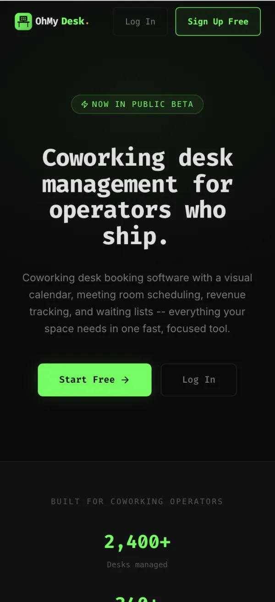
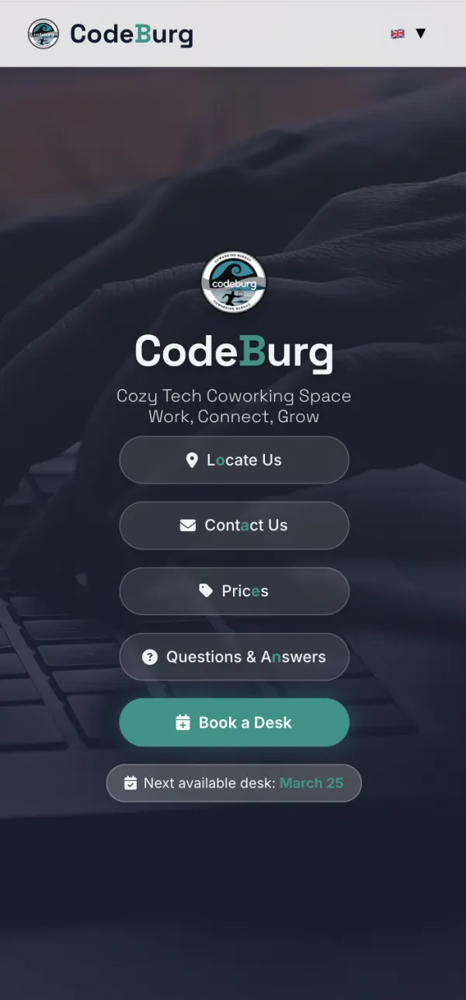

Senior Software Engineer with 11+ years building performance-critical applications across enterprise and product companies. Currently at GiveStar, leading CI/CD automation, testing culture, and AI-powered developer tooling — including a multi-repo AI agent built with the Anthropic API that auto-resolves engineering tickets. Previously delivered 25% faster load times and 10-24% Core Web Vitals improvements for Alma Media (Finland's largest real estate platform) and Groupon (5M+ users). Integrates AI into real workflows: Anthropic API, Vercel AI SDK, OpenAI, PostHog, and feature flag systems. Founded ObodSoft, building AI-powered products including Trudify marketplace.
Driving engineering excellence across multiple frontend repositories for GiveStar, a charity and fundraising platform. Spearheading CI/CD automation, testing culture, observability, and AI-powered developer tooling — delivering measurable impact within the first two months.
Tech Stack: React, TypeScript, GitLab CI/CD, Playwright, Anthropic API, Vercel AI SDK, RTK Query, PostHog, Sentry, Uptrends, Linear, openapi-typescript
Led frontend development for Alma Media, Finland's largest real estate marketplace (100K+ daily users), managing property listing platforms across Nordic region.
Tech Stack: Next.js 14, TypeScript, React 18, AWS, Chromatic, OpenAI, MUI, Jest, RTL
Reference: Hannu Moijanen
Performance optimization consulting and B2C product development alongside full-time contract work. Clients ranged from high-growth startups to enterprise platforms.
Tech Stack: Next.js, TypeScript, NestJS, Docker, Kubernetes, ELK, Stripe, DeepL
Progressed from Full Stack Developer to Team Lead across multiple enterprise client projects. Collaborated with distributed teams globally.
Developed supply chain traceability for Inditex (Zara) tracking production across 50+ manufacturing facilities. Led Agile ceremonies as Scrum Master.
Tech Stack: React, Redux, PostgreSQL, JS Proxy API, CSS Modules, React Testing Library, Figma, SonarQube
Led team of 4 developers building social media aggregation platform for enterprise clients. Managed product lifecycle, sprint ceremonies, and stakeholder communication across US/Europe/Asia time zones.
Tech Stack: React, ExpressJS, MongoDB, Jenkins, Docker, AWS
Developed review and rating widgets for high-traffic eCommerce platforms serving major retail brands including Best Buy, Walmart, and Target.
Tech Stack: JavaScript, ES6, Backbone.js, React.js, HTML5, CSS, SEO
Bulgarian services marketplace connecting customers with verified professionals for repairs, cleaning, moving, tutoring, and more. Free to use with verified profiles, ratings, and coverage across 8+ cities. Built with Next.js, Supabase, Stripe, and DeepL for multilingual support.
trudify.com
Coworking space management software for operators. Visual calendars, real-time desk and meeting room booking, automatic allocation, waiting lists, and revenue tracking. Integrates with Stripe and Google Calendar.
ohmydesk.app
Tech-focused coworking space in Burgas, Bulgaria. Ergonomic workstations, high-speed internet, 24/7 access for members. Built for developers and digital nomads, with a community-first approach. Founded and operating the physical space and digital presence.
codeburg.bg